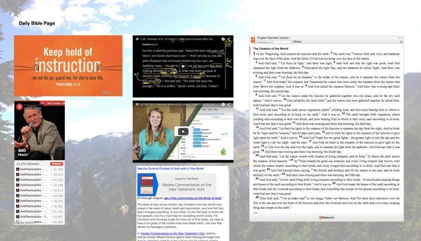

Search, find, and read the content you want with Daily Bible Page.
No more hassle having to subscribe to dozens of websites or having to visit multiple sites everyday.
Daily Bible Page brings you the best Christian content everyday, simply by opening your Chrome browser.
Search, find, and read the content you want with Daily Bible Page.
No more hassle having to subscribe to dozens of websites or having to visit multiple sites everyday.
Daily Bible Page brings you the best Christian content everyday, simply by opening your Chrome browser.
Available now on the Chrome Store!

Daily Bible Page is a Chrome extension I developed along with another intern at Faithlife
while competing in a company hackathon.
Using a tiling framework called Gridster.js, we made a completely customizable new tab layout
for customers to view their favorite Christian media posts. With just a 24 hour window, it
turned out pretty well.
You can view the source files on Github here.
You can download this extension from the Chrome Store here.
{kind=link}